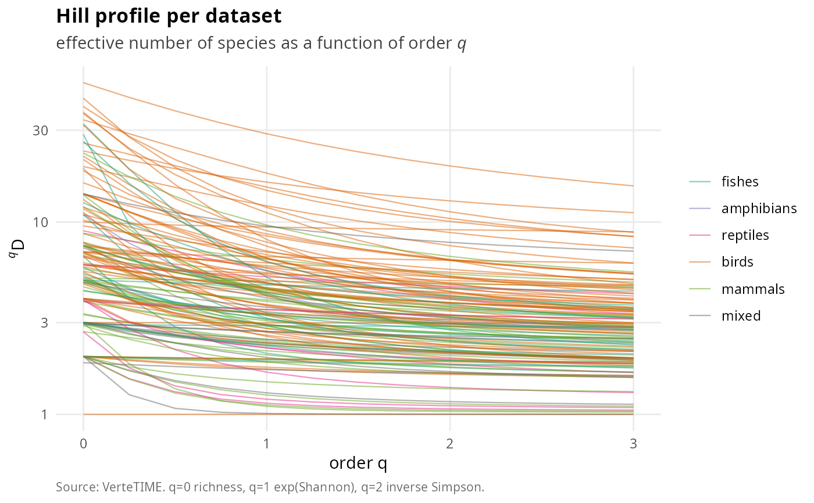

Hill-number profile per dataset across orders 0 to 3
Source:R/plot-portrait.R
vt_plot_hill_profile.RdFor every dataset, computes the compilation-wide Hill number for q in the
sequence seq(0, 3, by = 0.25) averaged across years and sites, and plots one line
per dataset coloured by taxonomic_focus. Hill profiles characterise the
diversity-of-order continuum: q=0 is richness, q=1 is exp(Shannon), q=2 is
inverse Simpson, large q saturates to dominance reciprocal.
Examples
if (FALSE) data(vertetime); vt_plot_hill_profile(vertetime) # \dontrun{}
